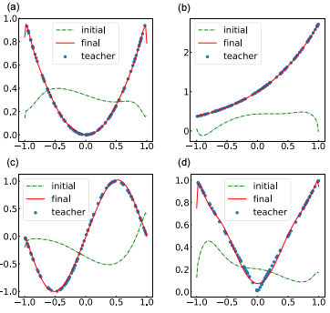
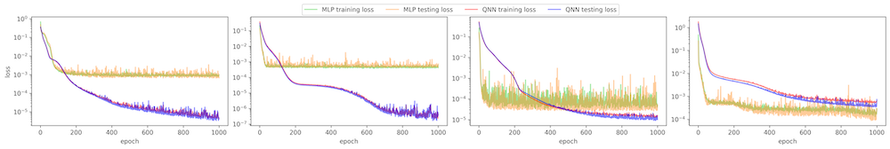
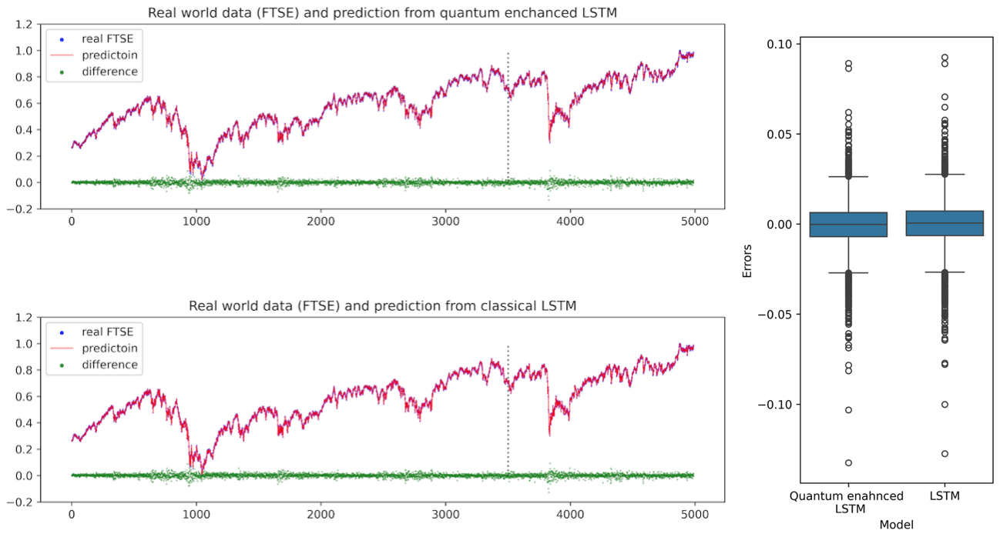

I am currently working on reproducing results from some paper in quantum neural networks (QNNs). One of the pioneering works is Quantum Circuit Learning, published by Kosuke Mitarai et al. in 2019. I believe this paper was among the first to discuss the theoretical foundation of using variational quantum circuits as the quantum counterpart of classical feedforward neural networks, including the exact gradient computation via the parameter-shift rule. I reproduced some results as shown below.
I trained a 1–5–5–1 MLP for comparison with the QNN results. The training and testing loss histories are shown below.
There are some works introducing Ansätze for time-series data prediction. I am aware of a paper on the Quantum Long Short-Term Memory (Quantum LSTM). However, since it does not include real-world applications, I tested it with real-world data: the Financial Times Stock Exchange (FTSE), and compared the results with a classical LSTM.
Further experiments details will follow.
Created by Cong in 2025, All rights reserved.